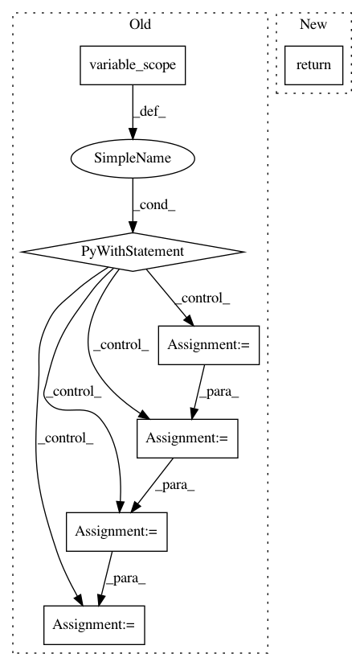

ea556a8f0d9fb0ba1a18b8ee3a08df198dbe418d,python/baseline/tf/lm/model.py,LanguageModelBase,create_loss,#LanguageModelBase#,69
Before Change
f.write(str(self.saver.as_saver_def()))
def create_loss(self):
with tf.variable_scope("Loss"):
vsz = self.embeddings[self.tgt_key].vsz
targets = tf.reshape(self.y, [-1])
bt_x_v = tf.nn.log_softmax(tf.reshape(self.logits, [-1, vsz]), axis=-1)
one_hots = tf.one_hot(targets, vsz)
example_loss = -tf.reduce_sum(one_hots * bt_x_v, axis=-1)
loss = tf.reduce_sum(example_loss) / self.batchsz
return loss
def make_input(self, batch_dict, train=False):
feed_dict = new_placeholder_dict(train)
After Change
return loss
def create_loss(self):
return self._create_loss(scope="loss{}".format(self.id))
def create_test_loss(self):
return self._create_loss(scope="test_loss")
In pattern: SUPERPATTERN
Frequency: 3
Non-data size: 7
Instances
Project Name: dpressel/mead-baseline
Commit Name: ea556a8f0d9fb0ba1a18b8ee3a08df198dbe418d
Time: 2018-11-13
Author: dpressel@gmail.com
File Name: python/baseline/tf/lm/model.py
Class Name: LanguageModelBase
Method Name: create_loss
Project Name: analysiscenter/batchflow
Commit Name: 1f47b5c59387812151bbe0f6a5838fed4fa09a1e
Time: 2017-12-14
Author: rhudor@gmail.com
File Name: dataset/models/tf/refinenet.py
Class Name: RefineNet
Method Name: decoder_block
Project Name: analysiscenter/batchflow
Commit Name: 4e9df7b36ab569d4aed0e87711755e9a3dc70b10
Time: 2017-11-12
Author: rhudor@gmail.com
File Name: dataset/models/tf/linknet.py
Class Name: LinkNet
Method Name: downsampling_block